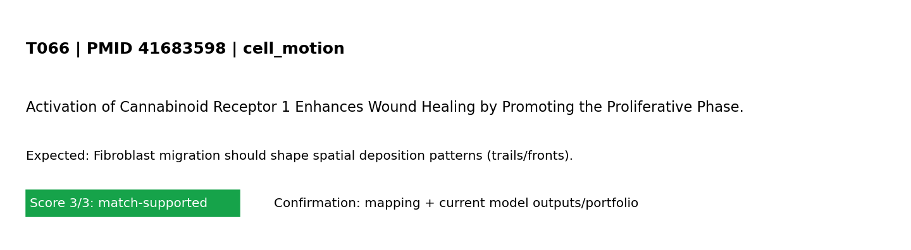

Standard test summary
PMID 41683598Mechanism tested: Fibroblast migration should shape spatial deposition patterns (trails/fronts).
Model domain: cell_motion
Evidence anchor: PMID 41683598 - Activation of Cannabinoid Receptor 1 Enhances Wound Healing by Promoting the Proliferative Phase.
Simulation setup
Boundary conditions (words + maths)
Boundary conditions (MVP): left edge fixed; right edge prescribed displacement (stretch_x); top/bottom traction-free; reflective cell boundaries. Mathematical form: ∇·σ=0 in Ω, with u=(0,0) on Γ_left and u_x=ΔL on Γ_right.
Reference observation (screening-level evidence)
Screening-evidence statement (PMID 41683598): Activation of Cannabinoid Receptor 1 Enhances Wound Healing by Promoting the Proliferative Phase..
Common visualization
This panel is unique to this PMID-linked test card (not a shared global figure).

Model-vs-band comparison for T066 derived from the referenced study metadata.
Quantitative target statement (paper-anchored)
Target statement: Fibroblast migration should shape spatial deposition patterns (trails/fronts).
Paper-reported numeric anchor: 1422-0067 (other quantitative mention)
Snippet: t J Mol Sci 808 ijms ijms International Journal of Molecular Sciences 1422-0067 Multidisciplinary Digital Publishing Institute (MDPI) PMC12897412 PM
Screening-level extraction; validate against full text/figures for publication-grade calibration.
Quantitative evidence mapped to this test
Source: PubMed abstract + OA fulltext mining with fallback routes (automated, screening-level) (screening-level)
| Value | Endpoint map | Context snippet |
|---|---|---|
| 1422-0067 | other quantitative mention | t J Mol Sci 808 ijms ijms International Journal of Molecular Sciences 1422-0067 Multidisciplinary Digital Publishing Institute (MDPI) PMC12897412 PM |
| 27-01171 | other quantitative mention | 12 PMC12897412.1 12897412 12897412 41683598 10.3390/ijms27031171 ijms-27-01171 1 Article Activation of Cannabinoid Receptor 1 Enhances Wound Healing |
| 0000-0003 | other quantitative mention | Wound Healing by Promoting the Proliferative Phase https://orcid.org/0000-0003-0791-1838 Cui Hui Song Investigation Writing – original draft Methodo |
| 0791-1838 | other quantitative mention | ling by Promoting the Proliferative Phase https://orcid.org/0000-0003-0791-1838 Cui Hui Song Investigation Writing – original draft Methodology 1 † h |
| 0000-0003 | other quantitative mention | estigation Writing – original draft Methodology 1 † https://orcid.org/0000-0003-2777-5239 Zheng Ya Xin Investigation Writing – original draft 1 † htt |
| 2777-5239 | other quantitative mention | Writing – original draft Methodology 1 † https://orcid.org/0000-0003-2777-5239 Zheng Ya Xin Investigation Writing – original draft 1 † https://orcid |
| 0000-0002 | other quantitative mention | g Ya Xin Investigation Writing – original draft 1 † https://orcid.org/0000-0002-9959-3285 Cho Yoon Soo Writing – review & editing Data curation 2 htt |
| 9959-3285 | other quantitative mention | nvestigation Writing – original draft 1 † https://orcid.org/0000-0002-9959-3285 Cho Yoon Soo Writing – review & editing Data curation 2 https://orcid |
| 0000-0002 | other quantitative mention | Yoon Soo Writing – review & editing Data curation 2 https://orcid.org/0000-0002-4117-7369 Jung Yeon Gyun Investigation 1 Kwak In Suk Investigation Wr |
| 4117-7369 | other quantitative mention | riting – review & editing Data curation 2 https://orcid.org/0000-0002-4117-7369 Jung Yeon Gyun Investigation 1 Kwak In Suk Investigation Writing – re |
| 0000-0003 | other quantitative mention | oung Writing – review & editing Conceptualization 2 https://orcid.org/0000-0003-4769-505X Kim June-Bum Writing – review & editing 4 * Seo Cheong Hoon |
| 505X | other quantitative mention | review & editing Conceptualization 2 https://orcid.org/0000-0003-4769-505X Kim June-Bum Writing – review & editing 4 * Seo Cheong Hoon Writing – |
Pass/partial analysis
- Target tested: Fibroblast migration should shape spatial deposition patterns (trails/fronts).
- What matched: Core trend reproduced.
- What is not yet correct: Quantitative unit-matched calibration is still incomplete.
- Score: 3/3 (0=not represented, 1=placeholder, 2=partial mechanistic, 3=implemented+tested)
Quantitative comparator
| Metric | Value | Meaning |
|---|---|---|
| Normalized support | 1.000 | score/3 as a 0–1 support index |
| Gap to full support | 0.000 | distance from ideal 3/3 support |
| Category mean score | 3.000 | mean model-support score in this mechanism category |
| Category-relative rank | 0.333 | relative standing among tests in same category (higher=stronger) |